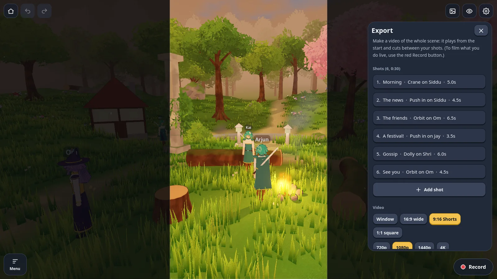

For creators who tell game stories
The offline studio for game story videos.
Build the set, place the cast, move the camera and export clean footage to narrate over. GameScene Studio is free, open source and never goes online.
- Up to 4K at 60 fps
- 16:9, 9:16 and 1:1
- Green screen and transparent
- No account

Five looks
Match the game your video is about.
Each look has its own world builder, characters and shading. Pick one when you start a scene.


The studio
Four panels do most of the work.
Everything sits one tap from the scene, on a phone or a desktop.

A cast that acts on its own
Give each character one of 19 behaviours and they get on with it while you film. Friends, rivals and fears change how they react to each other.

Cameras that move like a film
Follow, first person and free camera, plus orbit, dolly, crane and push-in moves. Line them up in a shot list with fades and title cards.

A timeline for every beat
One row per character, one for the camera, one for sound. Drop your narration on the sound row and time each action against it.

Export for the feed you post to
720p to 4K, wide, upright or square. Long exports pause, finish later and carry on after a crash.
Your voice, your story
The picture for the script you already wrote.
The app doesn't record or generate voices. It gives your narration something to play over.
- Bring the audio in. Import your voiceover as .wav, .mp3 or .ogg and place it on the timeline's sound row.
- Time the action to it. Walks, waves, poses and camera keys sit on the same clock as the sound.
- Every take plays the same. A scrub, a retake and the export match frame for frame, so a re-recorded line still fits.
- Or cut it elsewhere. Export on green screen or with a transparent background and finish in your own editor.
From blank to video
Three steps to a finished scene.
Build the set
Start from an empty world, a layout such as a forest, mountain pass or night town, or a ready-made scene. Add blocks, terrain, props and effects.
Direct the cast
Place characters, give each a behaviour, and key the moments that matter on the timeline. Pause any time to move people and carry on.
Film and export
Record a live take through your own camera, or export the whole scene through its shot list at the size your platform wants.
Yours, on your device
Offline software, with nothing held back.
- No account, no adsThe app never connects to the internet. There is no sign-up, telemetry or crash reporting.
- Your videos are yoursWhat you make with the app carries no conditions and no watermark.
- Open sourceGPL version 3 or later. Read it, change it and share your version.
- Desktop and phoneTested on Linux and Android. Windows and macOS builds exist and are still being tested.
Questions
Answers before you install.
What is GameScene Studio?
GameScene Studio is an offline app for making game-style animated videos, often called machinima. You build a scene, place characters, give them behaviours, set up cameras and export a video. It is made with the Godot engine and is at version 0.24.
Who is GameScene Studio for?
It is for creators who make story videos about games and narrate them with their own voice: lore explainers, recaps, skits and series episodes. The app supplies the picture and the creator supplies the story and the voice.
Does GameScene Studio record voiceovers or generate voices?
No. The app has no voice recording and no text-to-speech. You import your recorded voiceover as a .wav, .mp3 or .ogg file (up to 60 MB) onto the timeline's sound row, or you add it later in a video editor.
Is GameScene Studio free?
Yes. It is free, open-source software under the GNU General Public License, version 3 or later. It has no ads, no account and no watermark, and nothing in the app is locked.
Which platforms does GameScene Studio run on?
It is tested on Linux desktops and Android phones. Windows and macOS builds exist and are still being tested. An iOS build is not available yet.
Which visual styles can I make videos in?
Five: Blocky (voxel block building), Anime fantasy (cel-shaded 3D), Low-poly (faceted 3D), Pixel 2D side view and Pixel 2D top view. Each has its own world builder and characters.
What video formats and sizes does it export?
H.264 MP4 with AAC sound at 720p, 1080p, 1440p or 4K, at 24, 30 or 60 frames per second, in 16:9, 9:16 or 1:1. Backgrounds can be the scene, green screen, blue screen or transparent (ProRes 4444 MOV or a PNG sequence). MP4 export uses ffmpeg on desktop and the phone's own encoder on Android; without ffmpeg the app writes Motion-JPEG AVI.
Can I import my own characters and models?
Yes. The anime style imports .glb, .vrm, .gltf and .fbx characters and the low-poly style imports .glb, .gltf and .fbx. Bones are matched across 12 rig conventions, including Mixamo, VRoid, Unreal and Blender. Pixel 2D imports .png and .webp sprite sheets and Aseprite files, and Blocky imports 64 × 64 skins.
Does GameScene Studio need an internet connection?
No. The app never connects to the internet. It has no accounts, analytics, telemetry or crash reporting, and everything you make stays on your device.
Who owns the videos I make with it?
You do. What you make with the app (scenes, videos and screenshots) is yours, with no conditions.